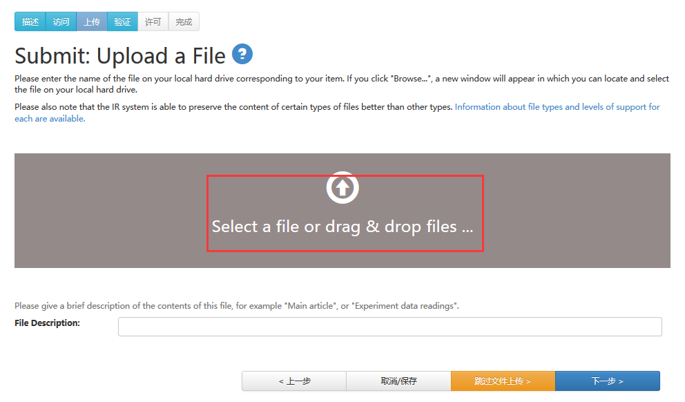

1 系统简介
武昌首义学院机构知识库(简称PKUIR)作为支撑我的大学学术研究的基础设施，收集并保存北京大学教师和科研人员的学术与智力成果；为我的大学教师、科研人员和学生的学术研究和学术交流提供系列服务，包括存档、管理、发布、检索和开放共享等。
2 浏览功能
首页检索框下的五个蓝色按钮是系统提供的五种基本浏览功能，该功能允许用户以特定的方式浏览条目的列表，见图2-1。

图2-1
2.1 按院系单位浏览
用户可以按字母顺序浏览所有院系单位。
按院系单位浏览，显示PKUIR的全部院系单位以及各院系单位下所包含的学术成果类型。同时，还显示各院系单位的条目总数及其所隶属的每种学术成果类型的条目数。见图2.1-1。
图2.1-1
2.2 按出版日期浏览
用户可以按照机构知识库中所有条目出版日期的时间先后进行浏览。系统默认是按照出版日期的升序方式来排序，用户也可选择按照题名/提交日期/出版日期的降序方式来排序。
默认状态下，每页显示20个条目，用户也可自行选择其它多种所显示条目数量。此外，用户还可选择特定的出版时间（包括年份和月份），以此快速“搜寻”某一时间段内出版的条目。
见图2.2-1。
图2.2-1
2.3 按作者浏览
用户可以按照机构知识库中所有条目的作者姓名的字母顺序进行浏览。系统默认是按照作者姓名的升序方式来排序，用户可自行选择按照作者的降序方式来排序。
默认状态下，每页显示20个条目，用户也可自行选择其它多种所显示条目数量。
见图2.3-1。
图2.3-1
2.4 按题名浏览
用户可以按照机构知识库中所有条目题名的字母顺序进行浏览。系统默认是按照题名的升序方式来排序，用户可自行选择按照提交日期/出版日期/题名的降序方式来排序。
默认状态下，每页显示20个条目，用户也可自行选择其它多种所显示条目数量。
用户也可“输入前几位字符”来快速搜寻某些特定题名的条目。
见图2.4-1。
图2.4-1
2.5 按主题浏览
用户可以按照机构知识库中所有条目的主题的字母顺序进行浏览。系统默认是按照主题的升序方式来排序，用户可自行选择按照主题的降序方式来排序。
默认状态下，每页显示20个条目，用户也可自行选择其它多种所显示条目数量。
用户也可“输入前几位字符”来快速搜寻某一特定主题的条目。见图2.5-1。
图2.5-1
2.6 学者推荐
随机显示四位知识库中的学者。主页上显示这些作者的姓名、职称、所属院系单位，点击进入后显示与该作者相关的信息和成果列表。 见图2.6-1。
图2.6-1
2.7 热门浏览
在主页上显示了机构 知识库中七个院系分别被点击次数最多的10条成果，包括每个成果的题名、发表刊物、发表年份、作者及被点击次数，见图2.7-1。
图2.7-1
2.8 按条件统计
在主页上按“作者”、“关键词”、“发表刊物”、“发表日期”等分类显示每一类别下所含条目数量最多的10个子类，并进一步显示这些子类所包含条目的个数。见图2.8-1。
图2.8-1
2.9 浏览功能说明
l 排序方式：按院系单位、标题、作者、关键词、发表日期等方式浏览，都是按照先数字、再英文、最后是中文的方式，数字按照0-9的顺序来排序，英文按照字母顺序A-Z来排序，中文的排在Z之后且中文按照相应浏览方式的第一个汉字的音序来排序。若想快速定位到某个中文条目，建议以搜索的方式来查找，即通过“输入前几位字符”，快速、准确地进行检索结果定位。
3 检索功能
系统支持多种检索功能，可以检索机构知识库中的全部数据，并获取全文。
3.1 检索框
要检索机构知识库的所有内容，可以使用首页中间的检索框，见图3.1-1。
图3.1-1
说明：
l 检索词间若有空格将默认使用AND连接各关键词，如检索题名= Politics Profit，则检索结果为题名中既含Politics又含Profit两个关键词的所有条目（与各关键词在题名中所处的位置无关）
3.2 结果过滤
点击首页右上角“全库检索”按钮，进入检索页面。该二级页面右侧是精炼检索，它将机构知识库的全部数据，按“作者”、“关键词”、“文献类型”、“发表日期”、“发表期刊”、和“语种”等进行了分类，并在每一类别下面的子类后显示该子类所含条目的个数，见图3.2-1。
图3.2-1
3.3 检索结果
l 点击“全库检索”按钮，页面中“检索结果”默认显示的是最新提交的20条条目，
见图3.3-1。
图3.3-1
l 在检索框中输入某一关键词（以输入“北京大学”为例）进行检索，得到的检索结果显示在页面“检索结果”下方，每页显示20条条目，见图3.3-2。
图3.3-2
l “结果过滤”，按检索结果进行自动更新。
4 教师学者
4.1 按院系单位浏览
要浏览相关院系的学者信息，点击“按院系单位”按钮，展开各院系信息，院系单位名称灰色表示该院系单位未有提供学者信息，点击院系名称将会展示系统中该院系单位的所有学者信息，见图4.1-1 和 图4.1-2。
图4.1-1
学者信息页面，显示各学者的头像、姓名、被浏览次数等信息；点击学者头像或姓名，将会进入单个学者的详细信息页面。见图4.1-2。
图4.1-2
4.2 学者详细页面
1）学者详细信息页面展示学者单位、ORCID、学术用名、个人主页、合作者、机构知识库中与学者相关的所有成果信息及其认领状态。见图4.2-1。
图4.2-1
2）列表中的相关资源分为“已认领”和“待认领”两个状态，学者本人点击待认领成果下方“认领”按钮，该成果即可认领成功，自动显示在“已认领”。对于“已认领”的成果，用户也可点击下方的“取消认领”按钮，轻松实现取消认领。见图4.2-2。
图4.2-2
5 登录
5.1 登录
1）当用户访问一个要求系统授权的区域时，系统会要求用户进行登录。点击首页的“请登录”-》“我的空间”按钮。见图5.1-1。
图5.1-1
2）在“登录我的大学机构知识库系统”页面，按照提示输入校园卡/图书证号以及相应的密码，之后点击登录，见图5.1-2。
图5.1-2
3）登录成功后，即进入“我的主页”。首次登录，用户还需提供一个常用邮箱并选择自己所属的机构，完成之后点击保存，见图5.1-3。
图5.1-3
5.2 “我的空间”相关操作
用户提供邮箱并选定所属机构后，就可以在“我的空间”，进行以下操作：
1）点击“登录/我的空间”，可以“提交新的作品”、“查看已发布的提交作品”及查看“未完成的提交作品”，见图5.2-1。
图5.2-1
2）在“我的空间”首页，用户点击 “未完成的提交作品”下面的“编辑”按钮，即可对未完成提交的作品进行继续编辑，见图5.2-2。

图5.2-2
3）在“我的空间”首页，用户点击“查看已发布的提交作品”，即可对已发布作品进行查看，见图5.2-3。
图5.2-3
6 上传（提交）功能
6.1 提交作品
提交功能使用户能够向机构知识库中添加新的成果作品。提交过程包括：选择想要提交的类型、描述将要提交的作品（填写相关的元数据）并上传该作品。
提交流程如下：
1) 用户登录后，在“我的主页”点击“新的提交作业”，见图6.1-1。
图6.1-1
2) 在提交页面，可以选择多种提交方式，如默认方式，需先选中院系单位，如“图书馆”，点击“下一步”，见图6.1-2、6.1-3、6.1-4。
图6.1-2
图6.1-3
图6.1-4
3) 在“描述您将提交的作品”界面，填写关于所提交作品的必要信息，对作品进行元数据描述。对于题名、作者、关键词等项，可通过点击旁边的“继续添加”进行添加，也可进行删除。填写完成之后点击“下一步”，见图6.1-5。
图6.1-5
4) 在“访问控制”页面，可以设置不允许检索、对外开放的禁锢期，或者添加访问策略，见图6.1-6。
图6.1-6
5) 在“上传文件”页面，点击“浏览或拖拽”按钮，选择并上传文件。下面的“文件描述”是帮助使用者了解文件的相关信息，例如“会议资料”、“实验数据”等，填写之后点击“下一步”，见图6.1-7。

图6.1-7
6）在“文件上传成功”页面：点选条目名称，将会在新窗口中下载条目，用户可以在新窗口查阅文件内容；点击描述“变更”按钮，可以重新进行“文件描述”；点击文件格式“变更”按钮，可以重新选择文件格式（如果列表中没有合适的文件格式，请描述该文件格式，您只需要新建一个文件的名称，并添加一个版本号，点击“发送”即可；点击“移除”按钮，跳回“上传文件”页面，可以重新进行上传。完成之后，点击“下一步”。见图6.1-8。
图6.1-8
图6.1-9
7）检查填写的成果信息、提交的文件、设置的访问策略是否正确。见图6.1-10。
图6.1-10
7）签署《我的大学机构知识库授权协议书》。若同意，则点击“我同意上述协议条款”，完成作品的最终提交。在“作品提交成功”页面，可以“回到我的空间”，也可以选择“继续提交该类型作品”。见图6.1-11和6.1-12。
图6.1-11
图6.1-12